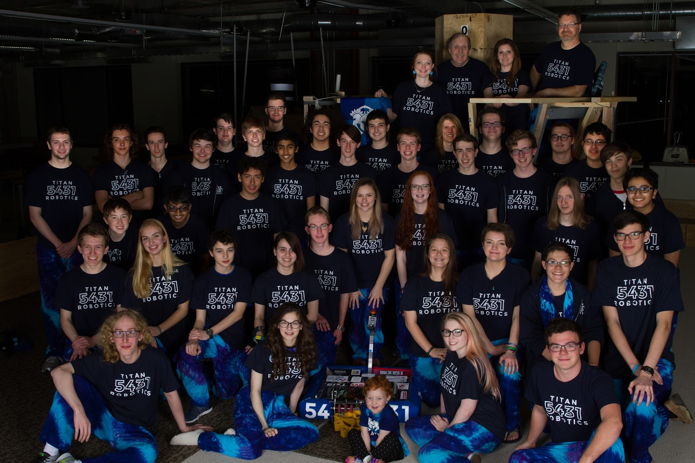

About FRC 5431
TITAN ROBOTICS strives to develop student leaders by collaborating to solve complex problems.
We participate in the FIRST program, where we are team number 5431. FIRST stands for For Inspiration and Recognition of Science and Technology. It was created to inspire students of all levels to understand, use, and enjoy science and technology. Today, 90% of FIRST alumni are pursuing a career in STEM fields.
Titan Robotics was founded in 2014 at the Plano ISD Academy High School in Texas. We have competed in the 2015, 2016, and 2017 FIRST Robotics Competition Seasons and competed at Championships all three years.
As a small, dedicated, team, we have developed the identity of Titan Robotics and created a self-sustaining robotics program at Plano ISD Academy High School.
Simply put, we design and build reliable robots.
Robotics competitions such as BEST and FIRST have given our team unity.
We consistently try our hardest to learn from our experiences and to work with other teams to secure our future success.
In our third year during 2017, we competed at the Dallas and Waco regionals, and were waitlisted into World Championships. At each competition we ended in Quarter finals.
During the off season, we competed in TRI were we were eliminated during quarterfinals.
During TRR, we made it to semifinals and were awarded with Team Spirit Award.
In cooperation with Chain Reaction, we hosted our own off-season event, The North Texas Tournament of Robotics.
